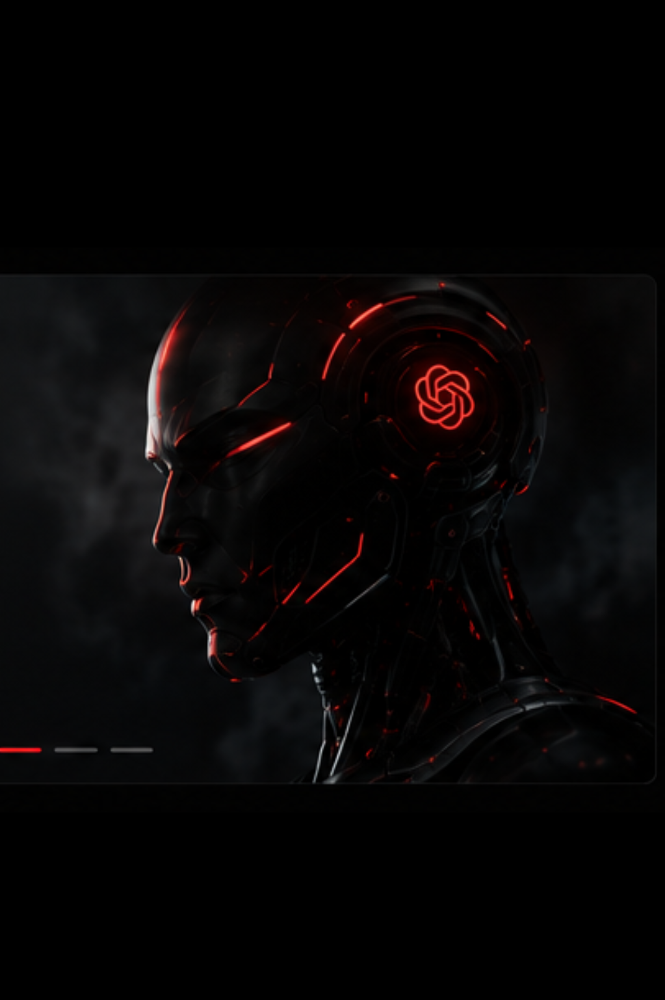
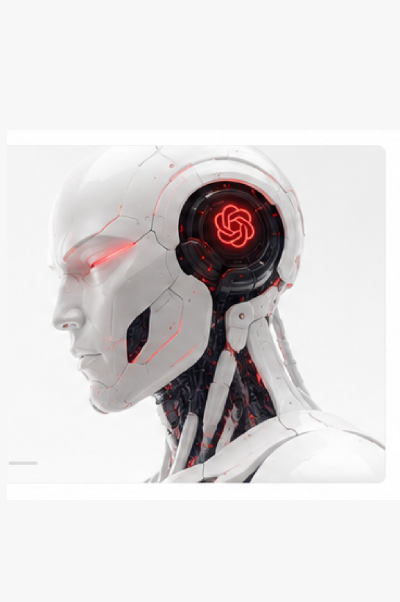

OpenAI Unveils Next-Gen Model GPT-5
OpenAI has officially launched GPT-5, its most advanced AI model to date, with major improvements in speed, reasoning, and multimodal intelligence.


OpenAI has introduced its latest generation of artificial intelligence technology, marking a major step forward in the evolution of digital assistants and intelligent systems.
The new model focuses on improved reasoning, faster response times, and stronger multimodal performance, allowing users to interact through text, images, and other formats more naturally.
The future of news is fast, intelligent, and visual.
For the tech industry, this release represents another signal that AI is becoming a core part of everyday products, from search engines and productivity tools to creative platforms and business automation.
PRESDA will continue tracking how this technology affects creators, companies, developers, and digital culture worldwide.